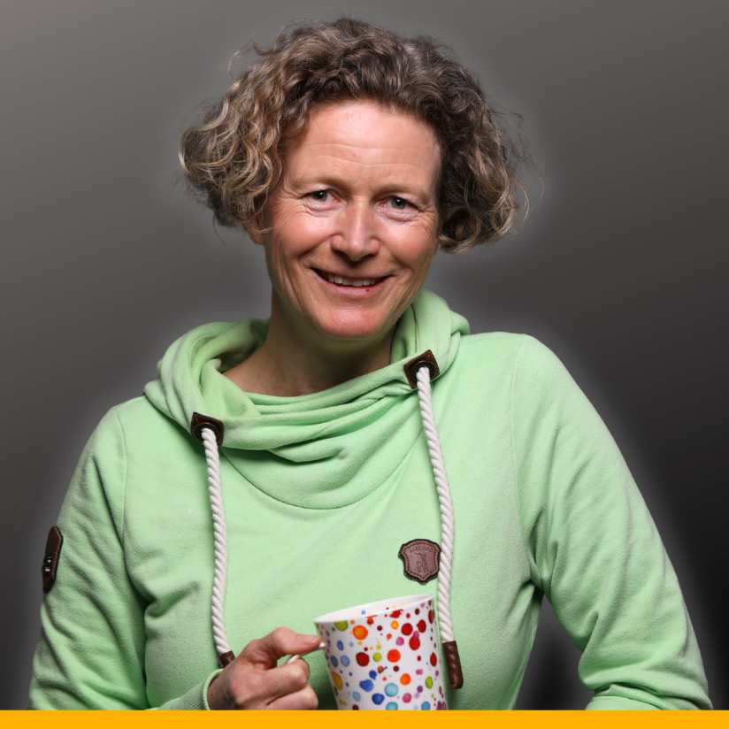

✦ Workshop · 6. & 10. August · Live auf Zoom ✦
In zwei halben Tagen baust du einen Workflow, der sich wiederholende Aufgaben für dich erledigt – flexibel, auf deinem Rechner, vollständig unter deiner Kontrolle.
Jetzt anmelden – 180 € nettoDu kennst das: Claude beantwortet Fragen, hilft beim Schreiben, denkt mit. Aber manche Aufgaben erledigen sich immer noch nicht von selbst. Videos nachbearbeiten, Aufzeichnungen aufbereiten, Mails vorbereiten, Dateien sortieren – immer wieder, immer du.
Was fehlt, ist kein besseres Prompt. Was fehlt, ist ein Prozess, der einfach läuft.
Dieser Workshop ist für dich, wenn:
Vielleicht kennst du Tools wie n8n oder Zapier. Klassische Automatisierungen sind praktisch – solange alles immer exakt gleich abläuft. Ändert sich ein Schritt, bricht die Verbindung.
Flexible Automatisierungen mit Claude Cowork funktionieren anders. Sie laufen auf deinem Rechner, nutzen Tools, die du schon hast, und passen sich an – weil Claude mitdenkt. Statt starrer Regeln gibst du den Kontext vor. Claude versteht, was gemeint ist, und bringt den Prozess ins Ziel.
Du nimmst ein Video auf. Claude Cowork schneidet es, erstellt ein Transkript, baut daraus eine Kurslektion im richtigen HTML-Design und lädt sie direkt in dein WordPress hoch. Ändert sich das Design deiner Seite? Kein Problem – du sagst es Claude, und der Rest läuft weiter wie gehabt.
Aufzeichnung landet automatisch als fertige Kurslektion in WordPress – mit Transkript, Beschreibung und Design.
Gesprächsnotizen werden zu einer strukturierten Zusammenfassung, Follow-up-Mail und Rechnung – in einem Durchgang.
Aus einem Blogartikel oder Video entsteht ein fertiger Newsletter-Entwurf – direkt in deinem Mail-Tool, im richtigen Design.
Wir analysieren gemeinsam deinen Prozess und bauen die erste Version deiner Automatisierung. Du gehst nicht mit einem Konzept nach Hause – sondern mit etwas, das wirklich läuft.
Du hattest eine Woche, um deinen Workflow im Alltag auszuprobieren. In Session 2 schauen wir, was noch fehlt oder anders sein soll – ich beantworte deine Fragen und wir verfeinern gemeinsam.

KI-Trainerin, Solopreneurin – und ich nutze Claude Cowork selbst täglich. Die Workflows, die ich dir in diesem Workshop zeige, habe ich für meine eigene Arbeit entwickelt. Nicht in der Theorie, sondern in echten Prozessen.
Mein Ziel ist, dass du nach diesen zwei Halbtagen weißt, wie du dir das Arbeiten mit KI wirklich leicht machen kannst – und das nächste Mal nicht auf mich warten musst.
180 € netto
Zwei Live-Sessions · Aufzeichnungen · Vorbereitungs-Material · Buddy
Du gehst mit einer fertigen Automatisierung nach Hause – und dem Wissen, wie du die nächste selbst baust.
Jetzt anmelden – 180 € netto